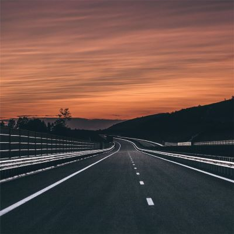
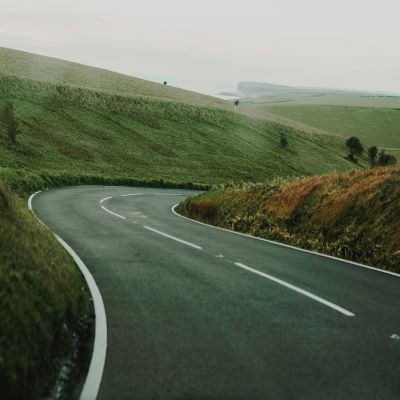

This article deals with the Road Not Taken summary written by Robert Frost and published in the year 1916. The Road Not Taken Summary is a poem that describes the dilemma of a person standing at a road with diversion. This diversion symbolizes real-life situations. Sometimes, in life too there come times when we have to take tough decisions. We could not decide what is right or wrong for us.
The poet looked at one path for a long time to decide whether it’s good or not for him. Then he takes the alternative path as he feels that both paths are equally good. He feels that the path he chose was better for him. The path was grassy which depicted that it was walked over by fewer people and also, it was ‘wanted wear”.
Driven by our hopes and ambitions, we take a decision taken by fewer people. We think that if fail to seek accomplishments we could get a chance to change and start again. However, we travel too far and have to regret at the end. Also, it is possible that we could become an extraordinary person because of that one decision. Thus, the road not taken summary focuses on making wise decisions in life.
It depicted that the path was unused. However, as he walks on the path for some distance, he realizes that both the paths were similarly worn out. Even in our life, every decision has its own good and bad consequences. We might think we are in a better position than the others but it is not the reality.
The poet says that the two paths looked similar that morning. Both were having leaves on them. No one stepped on that and thus they were green. He decided to move forward on one path and keep the other for another day. Although he knew that he would not be able to return back as one path would lead to another. This happens in life too. We make a decision and move forward in that direction. We think that we would get a chance to start over again if we fail. But that does not happen.
The poet says that sometime in the future, he will take a deep breath and tell that once in a lifetime he had to take a tough decision. He was standing at a diversion of two roads. Both looked to him equally well. Thus, he decides to move forward on the road which fewer people took. As a result, it has made him what he is today. That one decision shaped his future.